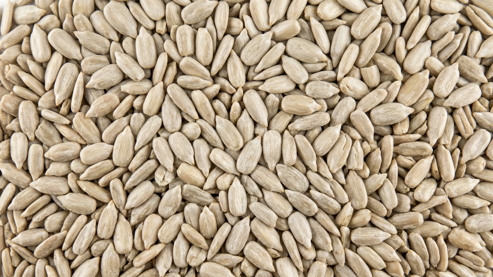

Samen & Kerne
Geschälte Sonnenblumenkerne
Geschälte Sonnenblumensamen — Bakery, Premium Bakery, Confectionery, Chips
Geschälte Sonnenblumenkerne in Großmengen — Bakery, Confectionery & Chips, Direktlieferant aus Bulgarien.
Bestelldetails
Verpackungsoptionen
Bakery — Geschälte Sonnenblumenkerne
Die Bakery-Qualität von Stufiyan Agro wird aus Sonnenblumensorten hergestellt, die auf unserem eigenen Ackerland in der Region Warna im Rahmen eines streng überwachten pestizidreduzierten Anbausystems angebaut werden. Nach der Ernte durchlaufen die Samen mechanisches Schälen, Aspiration und Schwerkraftseparation, um eine außergewöhnliche Mindestreinheit von 99,98 % zu erreichen.
Der Standard-Bakery-Größenbereich — kalibriert auf 650 bis 700 Stück pro Unze (Stk/oz) — liefert ein sehr gleichmäßiges Kornprofil, das gleichmäßig röstet und sich homogen in gewerbliche Brotteige, Brötchen, Cracker und Granolaklumpen einarbeitet. Die natürliche weiß-bis-hellgraue Kernfarbe bietet einen ausgezeichneten visuellen Kontrast in fertigen Backwaren.
Die Verarbeitung erfolgt in unserer FSSC 22000-zertifizierten integrierten Anlage in Suworowo. Vollständige Dokumentation einschließlich COA, Ursprungszeugnis und EUR.1 wird jeder Containerlieferung beigefügt.
Confectionery — Geschälte Sonnenblumenkerne
Die Confectionery-Qualität stellt die größte und visuell makelloseste Fraktion ganzer Kerne aus unserem mehrstufigen Schälbetrieb dar. Handverlesen für ultimative Formeinheitlichkeit und ein reines, makelloses weißes Erscheinungsbild, sind diese Premium-Kerne präzise auf 500 bis 550 Stk/oz kalibriert. Ihr erheblicher visueller und textureller Einfluss macht sie zum Industriestandard für Einzelhandels-Snackmischungen, Premium-Trailmixe und Schokoladenkonditoreiwaren.
Der Gehalt an gebrochenen Kernen wird auf ein außergewöhnlich strenges Maximum von 6 % begrenzt. Wir erreichen eine nahezu makellose 99,99 % Reinheit durch sekundäre optische Sortierlinien.
Kosher- und Halal-Dokumentation auf Anfrage erhältlich. Lieferung in 25-kg-Papiersäcken oder 1.000-kg-Big-Bags.
Sonnenblumenkern-Chips (Bruchkerne)
Sonnenblumenkern-Chips sind ein natürliches Nebenprodukt unseres Schäl- und Sortierprozesses — Stücke, die außerhalb der Ganzkorn-Größenfraktionen fallen. Trotz ihrer unregelmäßigen Form behalten Chips dasselbe Nährwertprofil wie ganze Kerne: hoher Ölgehalt (42–48 %), gute Proteinwerte und sauberer Geschmack.
Der Ganzkerngehalt ist auf maximal 5 % begrenzt, was bedeutet, dass der überwiegende Teil des Produkts echte Bruchstücke sind — eine Anforderung für Kunden, die Vogelfutter, Energieriegel oder Granola formulieren.
Lieferung in 500-kg- oder 1.000-kg-Big-Bags für Futter- und Industriekunden oder in 25-kg-Papiersäcken. Non-GMO- und Bulgarien-Herkunftsdokumentation sind Standard.
Technische Spezifikationen — Bakery
| Parameter | Spezifikation |
|---|
Werte sind Richtwerte. Tatsächliches COA wird mit jeder Lieferung bereitgestellt.
Dokumentation
Mit jeder Lieferung verfügbar
Analysezertifikat
Vollständige Parameteranalyse je Charge
StandardUrsprungszeugnis
Bulgarische Herkunft, EUR.1 für die EU
StandardPhytosanitäres Zertifikat
Ausgestellt von der bulgarischen BFSA
Auf AnfrageDrittlaborbericht
Akkreditierte Laborprüfung
Auf AnfrageInteresse an geschälten Sonnenblumenkernen?
Kontaktieren Sie unser Vertriebsteam für Qualitätsauswahl, Preisauskünfte, Muster und Lieferbedingungen.